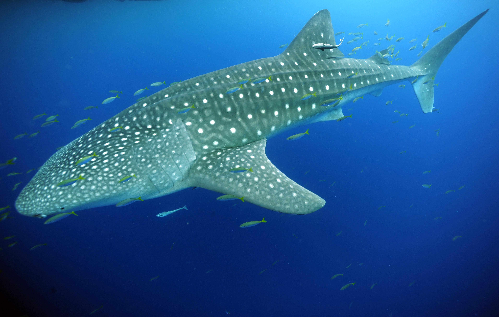
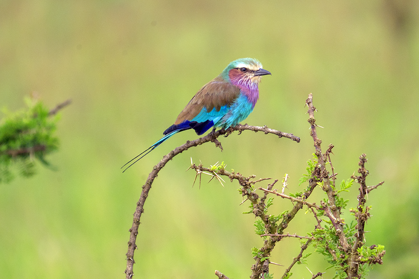

Land Realm
Safari & Wildlife
Africa's great wilderness
Big cats, primates, elephants, and the drama of the African bush. Track the Big Five, witness the great migration, sit ten feet from a mountain gorilla.

Ocean Realm
Underwater World
From whale sharks to coral reefs
Manta rays, whale sharks, sea turtles, and the impossible colors of a coral reef. The ocean holds the largest wildlife encounters on earth.

Sky Realm
Birds in Flight
5,000 species worth finding
Shoebills, fish eagles, rollers, flamingos, and raptors on the wing. Birds are everywhere — once you start looking you can't stop.
The world's wildlife
across three realms
Animals are the most memorable moment of every trip.
So why isn't your whole trip built around them?
Explore